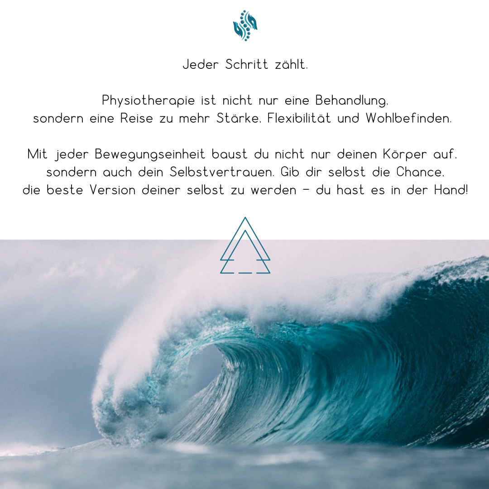
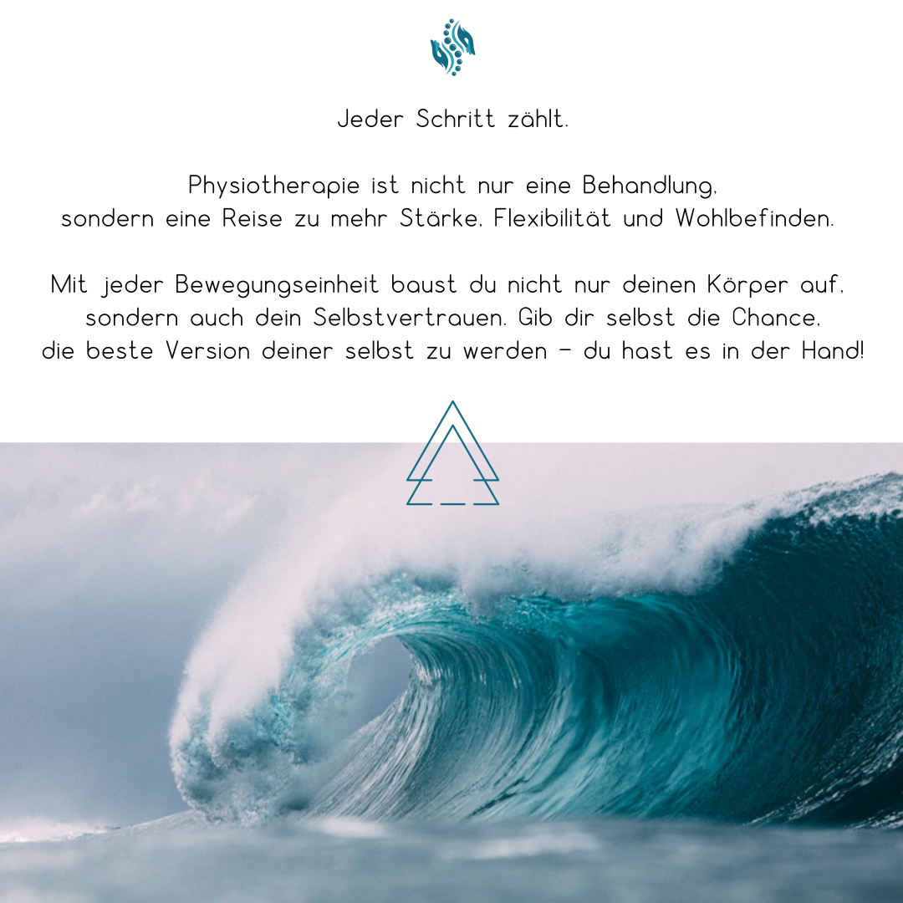

Welcome to the private practice for physiotherapy in Oberursel!
I am delighted that you have found your way to me.
In my practice, I offer you individual and holistic treatment that is tailored to your needs. Whether you have acute or chronic complaints, need support after an injury or operation or would like to take preventative measures for your health – I will be happy to assist you.
My aim is to help you become pain-free in the long term and regain your quality of life. I take enough time for your concerns, as this is the only way we can achieve the best possible result and develop a suitable treatment plan.
Take a look around my website and find out more about the services I offer.
I look forward to welcoming you in person soon!
Janine Ebenböck